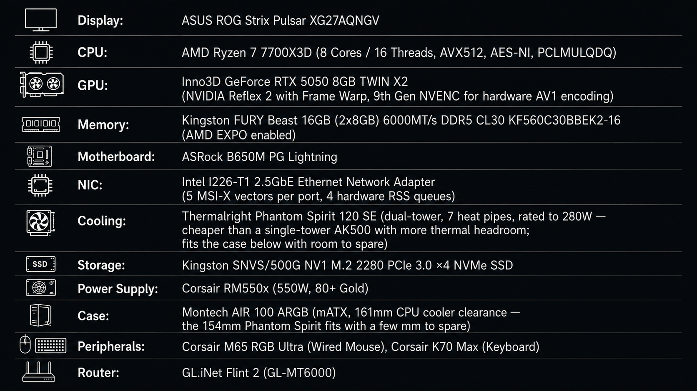

§0Hardware verdict

| Component | Verdict | Note |
|---|---|---|
| CPU — Ryzen 7 7700X3D | KEEP | 8C/16T, 104MB total cache, 120W TDP / 162W max PPT. Confirm BIOS support before install (§3). |
| GPU — RTX 5050 8GB | KEEP | 130W board power, 9th-gen NVENC with a dedicated AV1 encode block, 8GB GDDR6/128-bit. Well ahead of what Valorant needs at 1080p Low. |
| RAM — 16GB 6000 CL30 | KEEP | X3D cache absorbs most memory-latency sensitivity; EXPO is the only lever that matters here. |
| Storage — 500GB Kingston SNVS/500G NV1 PCIe 3.0 NVMe SSD | KEEP | X3D cache absorbs most memory-latency sensitivity; EXPO is the only lever that matters here. |
| Monitor — XG27AQNGV | KEEP* | *Native panel is 1440p, not 1080p. Genuine 1080p only exists behind a monitor-side toggle — see §1 before anything else. |
| PSU — 550W 80+ Gold | KEEP | GPU (130W) + CPU (≤162W) + platform ≈ 320–350W worst case → >35% headroom. |
| Cooler / Case / NIC | KEEP | Nothing in this target requires a change here. |
§1Enable Esports Dual Mode correctly
Do this firstASUS's own spec sheet lists the XG27AQNGV natively at 2560×1440, 360Hz IPS. There's no 1080p panel here — 1080p only exists behind Esports Dual Mode, a toggle in the monitor's own OSD, independent of anything set in Windows or Valorant.
Dual Mode is also not a single switch — it offers two resolutions: a genuine 1920×1080 image shown at a reduced 25″ diagonal, and a separate 2368×1332 "pixel-perfect" mode. Only the first one is what the rest of this guide assumes.
- Monitor OSD → GamePlus / Esports Dual Mode → select 1080p specifically (not 2368×1332).
- Windows → Settings → Display → confirm the desktop now reads 1920×1080.
- Then apply Valorant's in-game Resolution: 1920×1080 / Fullscreen (§2).
§2In-game video settings
Standard esports configEvery setting below trades visual fidelity for frame time. This is a standard low-overhead esports configuration: Low across the board, minimal post-processing, multithreaded rendering on to spread work across all eight cores.
| Setting | Value |
|---|---|
| Resolution | 1920×1080 (16:9) |
| Display Mode | Fullscreen |
| Multithreaded Rendering | On |
| Material / Texture / Detail / UI Quality | Low |
| Anti-Aliasing | None or MSAA 2x |
| Anisotropic Filtering | 2x |
| Bloom / Distortion / Cast Shadows | Off |
| VSync | Off |
| NVIDIA Reflex Low Latency | On + Boost (§4) |
§3Ryzen 7 7700X3D: specs and BIOS readiness
VerifiedOften mistaken for a mistyped 7800X3D — it isn't one. AMD announced it at Computex 2026 and it shipped 16 Jul 2026: 8C/16T, Zen 4, 96MB L3 + 8MB L2 (104MB total) — the same cache pool as the 7800X3D, just clocked lower (4.0GHz base / 4.5GHz boost). $329 MSRP, Newegg-exclusive in North America at launch.
Stock power is 120W TDP, 162W max PPT — the same ceiling as the 7800X3D. A common approach for quiet, cool operation on an esports-only build is capping TDC/EDC/PPT to roughly 85–90W (about 45% below stock) via PBO limits, since Valorant rarely loads all eight cores at once. Treat any specific number as a starting point to validate with a stress test and a real 1% low benchmark, not a pre-verified optimum for this exact chip.
§4NVIDIA Reflex: On + Boost, and where Reflex 2 fits
ExplainedEnable Reflex Low Latency in On + Boost mode. In this pairing at these settings, Valorant is CPU-bound — the GPU isn't the limiting factor, so there's no GPU-side bottleneck here for Boost to manage. What Boost actually contributes: it keeps GPU clocks from idling down between frames, so the GPU isn't re-ramping — which costs latency — on the next one. That's the real win in a CPU-bound scenario like this.
Reflex 2 / Frame Warp is real, and it does apply to Valorant on RTX 50-series — NVIDIA quoted sub-3ms latency at 800+ fps on an RTX 5090 back at CES 2025 — but the rollout has been inconsistent: it was still listed as upcoming with no shipped build as of October 2025, and later reporting shows it live in Valorant on RTX 50-series GPUs. Check Settings directly rather than assuming it's active. Either way, it's a latency feature, not an FPS or GPU-load one — it won't move either of the two numbers this guide is built around.
§5Cap FPS a few frames under your refresh rate
Verify in-clientSet Limit FPS Always to a few frames under the monitor's max refresh (for example, 355 on a 360Hz panel) rather than at or above it. Capping under the refresh rate keeps the display inside its variable-refresh range, which is corroborated by current guidance as producing more stable frame times and better 1% lows — the metric this target actually prioritizes.
- Confirm the limiter takes an exact typed value. It's been a preset dropdown in most documented walkthroughs; if 355 isn't selectable, take the nearest preset under 360, not over.
- Ignore "cap 100+ fps above refresh" advice found in some newer guides. It's real for bare click-to-photon latency, but it reintroduces tearing — defeating the point of a G-Sync Pulsar panel — and raises 3D-engine load right when the other hard constraint here is GPU <95% while the encoder's also running. Different priority than the one this build is optimizing for.
§6NIC tuning: RSS queue assignment for the Intel I226
Verified + caveatsThe Intel I226 family exposes 4 RX/TX queues and up to 5 MSI-X vectors per port, confirmed via Intel's own datasheet — so a 4-processor RSS assignment maps cleanly onto the real hardware limit.
# 1. Confirm the interface name and current adapter properties
Get-NetAdapter
Get-NetAdapterAdvancedProperty -Name "Ethernet" | Format-Table -AutoSize
# 2. Confirm real logical-processor-to-core mapping before assuming core 0 = LP 0/1
# Task Manager -> Performance -> CPU -> right-click -> Change graph to -> Logical processors
# 3. Assign RSS queues starting above core 0 (adjust BaseProcessorNumber to your confirmed mapping)
Set-NetAdapterRss -Name "Ethernet" -BaseProcessorNumber 2 -MaxProcessorNumber 8 -MaxProcessors 4 -Profile NUMAStatic
Set-NetAdapterAdvancedProperty -Name "Ethernet" -DisplayName "Interrupt Moderation" -DisplayValue "Disabled"
# ^ trades network latency for CPU interrupt overhead — A/B against your 1% low counter, not a free win
# 4. Disable power-saving features that can cause micro-disconnects
Set-NetAdapterAdvancedProperty -Name "Ethernet" -DisplayName "Energy Efficient Ethernet" -DisplayValue "Disabled" -ErrorAction SilentlyContinue
Set-NetAdapterAdvancedProperty -Name "Ethernet" -DisplayName "Ultra Low Power Mode" -DisplayValue "Disabled" -ErrorAction SilentlyContinue
# 5. Verify the change actually took
Get-NetAdapterRss -Name "Ethernet"- Disabling Interrupt Moderation is a trade, not a guaranteed win — see the inline note above.
BaseProcessorNumber 2assumes Windows enumerates logical processors as core0 = LP0/1, core1 = LP2/3, etc. That's the common mapping, not a guaranteed one — confirm it before trusting that "start at 2" really skips core 0 on a given board.- Several I226-T1 owners on Windows 11 24H2 report the RSS/queue/buffer properties missing entirely from the driver's Advanced tab until Intel's own driver is installed over the Windows-Update-supplied one. If
Get-NetAdapterAdvancedPropertycomes back short, that's the fix.
§7Prioritize game traffic over the stream upload
CAKE + DSCPA 1080p60 AV1 upload is enough to saturate a lot of residential upstream bandwidth and bufferbloat the connection out from under low-bandwidth, latency-sensitive game traffic. CAKE's diffserv4 tin mapping puts DSCP CS5 in the top ("Voice") tier by default, so marking the game's outbound UDP with CS5 genuinely prioritizes it ahead of the stream's default best-effort TCP during contention.
- Set the ISP modem to Bridge Mode to avoid double NAT.
- On the router: WAN connection type → PPPoE, enter ISP credentials.
- Network → SQM QoS → enable on the WAN interface. Run a real speed test first, then set Download/Upload to ~85–90% of the measured result.
- Queue discipline: cake, script
piece_of_cake.qos. Link layer: Ethernet, overhead 44 (mpu 84) — a starting point, not a fixed value. - Firewall → mark outbound UDP in the game's port range with DSCP CS5.
§8Patch reference: 13.01, Season 2026 Act 4
Current13.01, dated 14 Jul 2026, Season 2026: Act 4, is the current patch as of this guide's last verification. It's an Iso/Yoru/Outlaw balance pass plus new rank-manipulation enforcement — nothing touching rendering, netcode, or anti-cheat behavior that would change any setting above.
FAQ
Does the RTX 5050 bottleneck Valorant at 1080p?
No. The RTX 5050 draws about 130W and includes a 9th-generation NVENC encoder, far more GPU than Valorant needs at 1080p on Low settings. At these settings the game is CPU-bound, so the GPU sits well under its ceiling even before a stream is added.
What is the difference between the Ryzen 7 7700X3D and the 7800X3D?
They share the same core count (8C/16T), the same 104MB total cache, and the same 162W max power ceiling. The 7700X3D simply runs at lower clocks (4.0GHz base, 4.5GHz boost) and launched later, in July 2026, at a lower price. It's a distinct SKU slotted between the 7600X3D and 7800X3D, not a naming error.
How do I get true 1080p on the ASUS ROG Strix Pulsar XG27AQNGV?
The panel is natively 1440p (2560×1440). Genuine 1920×1080 only exists behind Esports Dual Mode, a toggle in the monitor's own on-screen display rather than a Windows or in-game setting. Dual Mode includes a separate 2368×1332 option too, so select the 1080p variant specifically, then confirm Windows reports 1920×1080 before setting the resolution in-game.
Should Valorant's FPS cap be set above or below the monitor's refresh rate?
Below it, by a small margin — for example 355 fps on a 360Hz panel. Capping under the refresh rate keeps the display inside its variable-refresh range, producing more stable frame times and better 1% lows, the priority for a competitive target like this. Capping well above the refresh rate can lower raw click-to-photon latency slightly, but it reintroduces screen tearing and raises GPU load, working against a variable-refresh display and a GPU-utilization ceiling at the same time.
Does streaming with NVENC AV1 lower Valorant's frame rate?
Only marginally. NVENC uses a dedicated encoder block separate from the GPU's 3D rendering engine, so encoding the stream doesn't compete directly with game rendering on the same silicon. The larger practical risk is upload bandwidth contention on the network rather than GPU contention, which is what QoS configuration on the router addresses.
Is NVIDIA Reflex 2 with Frame Warp available in Valorant?
It's supported on RTX 50-series GPUs, but the rollout has been inconsistent. NVIDIA announced it for Valorant in January 2025, it was still listed as upcoming with no shipped build as of October 2025, and later reporting shows it live. Check the in-game Settings menu directly rather than assuming it's active, and treat it as a latency improvement rather than a frame-rate or GPU-utilization one.
Do I need to upgrade any hardware to hit 360 FPS at 1080p while streaming?
No. A Ryzen 7 7700X3D, an RTX 5050, 16GB of 6000MT/s DDR5, and a 550W Gold PSU are all well ahead of what this specific target requires. What actually matters is configuration — the monitor's Dual Mode setting, BIOS readiness for a newly launched CPU, and a handful of NVIDIA and network settings.
Run order
- Monitor OSD → Esports Dual Mode → 1080p (not 2368×1332) → confirm Windows shows 1920×1080. (§1)
- Apply the video settings above. (§2)
- Check the motherboard's BIOS page for explicit 7700X3D support; BIOS Flashback if it isn't listed. (§3)
- Reflex → On + Boost; check Settings for Reflex 2 / Frame Warp availability and enable it if present. (§4)
- Set Limit FPS Always and confirm it lands on ~355 fps, or the nearest preset under 360. (§5)
- Run the NIC RSS commands; verify with
Get-NetAdapterAdvancedProperty/Get-NetAdapterRssthat they took. (§6) - Set a PBO power cap and Curve Optimizer offset, stress-test for stability, then benchmark 1% lows with Interrupt Moderation on vs. off. (§3/§6)
- Bridge mode + PPPoE + CAKE on the router; scope the DSCP mark rule to the game's UDP ports specifically. (§7)